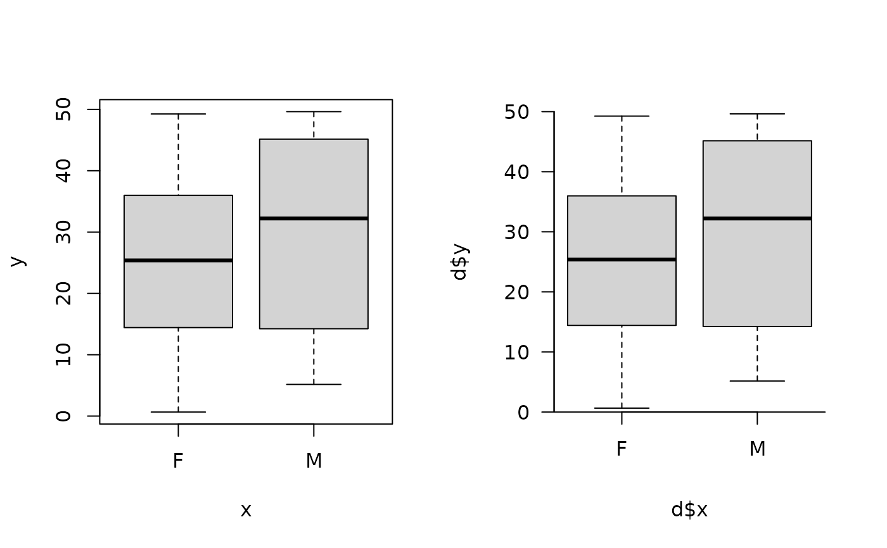
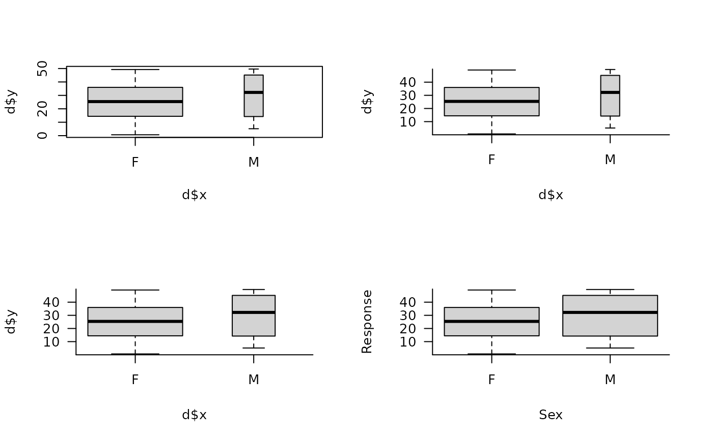
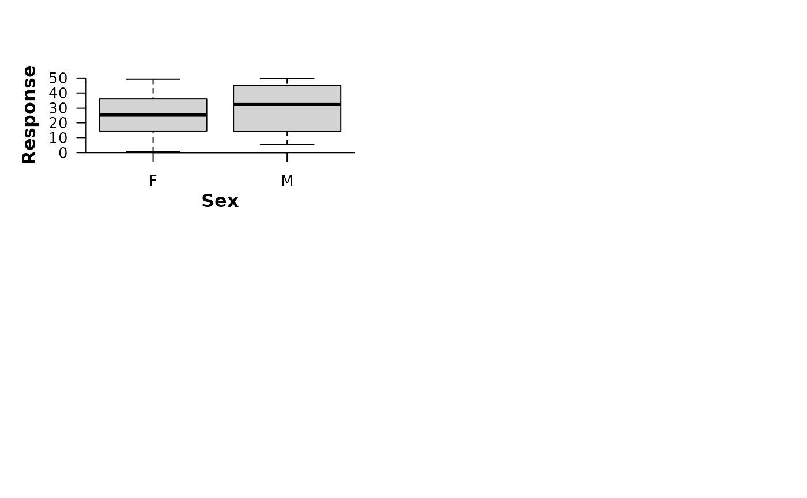
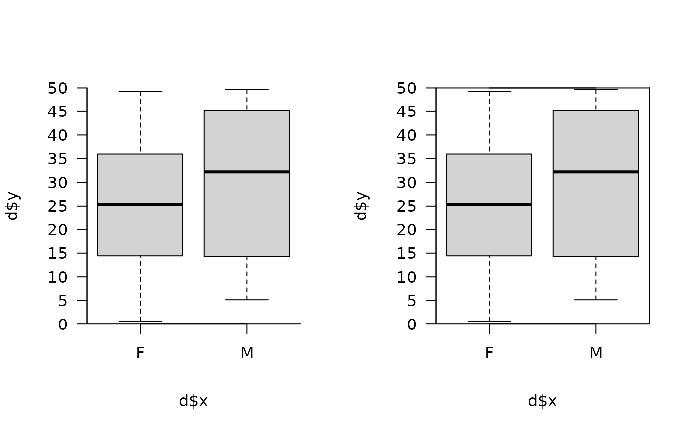
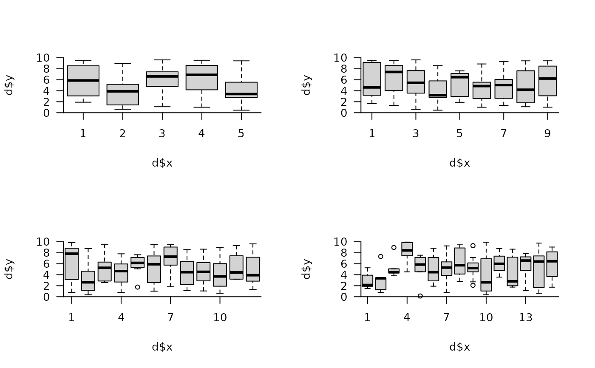
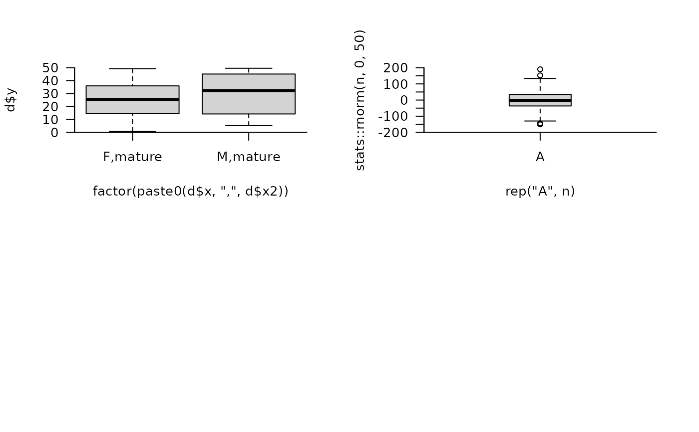

This function makes prettier boxplots. Boxplots are created using boxplot but the axes are controlled via pretty_axis and an adj argument. The addition of axis labels is also more flexible because, while these can be implemented via xlab, ylab and main as usual, axis labels can also be controlled using mtext via mtext_args.
A factor vector.
A numeric vector.
Axis limit control short-cuts. xadj controls the x axis limits via the 'control_factor_lim' argument in pretty_axis. These are taken as c(1 - xadj, number of factor levels + xadj). (xlim should not be supplied.) ylim is a vector of two limits for the y axis, implemented via pretty_axis. Both arguments are short-cuts to specifying axis limits via pretty_axis_args (see below).
A named list of arguments passed to pretty_axis to control axes.
The x axis label. This can be added via mtext_args for more control.
The y axis label. This can be added via mtext_args for more control.
A named list of arguments passed to mtext to add axis labels. A nested list is used to control each axis separately.
Additional arguments passed to boxplot These should not include xlim, frame.plot or axes which are suppressed so that pretty_axis_args can control axes.
The function returns a pretty boxplot.
Note that, unlike boxplot, formula notation is not implemented.
#### Generate example data, e.g. sex, size and maturation status of an animal
set.seed(1)
dx <- sample(c("M", "F"), size = 100, replace = TRUE, prob = c(0.2, 0.8))
dy <- stats::runif(length(dx), 0, 50)
dx2 <- ifelse(dx < 10, "immature", "mature")
d <- data.frame(x = dx, x2 = dx2, y = dy)
#### Example (1): Comparing graphics::boxplot() and prettyGraphics::pretty_boxplot()
pp <- par(mfrow = c(1, 2))
graphics::boxplot(y ~ x, data = d)
pretty_boxplot(d$x, d$y)
#> 'x' co-erced to a factor.
#> pretty$n greater than the number of factor levels; resetting n to be the total number of factor levels.

par(pp)
##### Example (2): Unlike graphics::boxplot() formula notation is not supported
if (FALSE) {
pretty_boxplot( d$y ~ d$x)
}
#### Example (3): Other arguments can be passed via ... to boxplot
pp <- graphics::par(mfrow = c(2, 2))
graphics::boxplot(d$y ~ d$x, width = c(5, 1))
pretty_boxplot(d$x, d$y, data = d, width = c(5, 1))
#> 'x' co-erced to a factor.
#> pretty$n greater than the number of factor levels; resetting n to be the total number of factor levels.
pretty_boxplot(d$x, d$y, data = d, varwidth = TRUE)
#> 'x' co-erced to a factor.
#> pretty$n greater than the number of factor levels; resetting n to be the total number of factor levels.
# However,xlim us is set via pretty_axis_args and should not be supplied.
if (FALSE) {
pretty_boxplot(d$x, d$y, xlim = c(1, 2))
}
#### Example (4): Axis labels can be added via xlab, ylab and main
# ... or via mtext_args for more control
pretty_boxplot(d$x, d$y, xlab = "Sex", ylab = "Response")
#> 'x' co-erced to a factor.
#> pretty$n greater than the number of factor levels; resetting n to be the total number of factor levels.

pretty_boxplot(d$x, d$y,
xlab = "", ylab = "",
mtext_args = list(list(side = 1, text = "Sex", font = 2, line = 2),
list(side = 2, text = "Response", font = 2, line = 2)))
#> 'x' co-erced to a factor.
#> pretty$n greater than the number of factor levels; resetting n to be the total number of factor levels.
#### Example (5): Axes are controlled via pretty_axis_args
pp <- par(mfrow = c(1, 2))

pretty_boxplot(d$x, d$y, pretty_axis_args = list(side = 1:2,
pretty = list(n = 10),
axis = list(las = TRUE)))
#> 'x' co-erced to a factor.
#> pretty$n greater than the number of factor levels; resetting n to be the total number of factor levels.
# Add a box around the plot:
pretty_boxplot(d$x, d$y, pretty_axis_args = list(side = 1:4,
pretty = list(n = 10),
axis = list(list(),
list(las = TRUE),
list(labels = FALSE, lwd.ticks = 0),
list(labels = FALSE, lwd.ticks = 0)))
)
#> 'x' co-erced to a factor.
#> pretty$n greater than the number of factor levels; resetting n to be the total number of factor levels.
#> pretty$n greater than the number of factor levels; resetting n to be the total number of factor levels.

par(pp)
#### Example (6): Examples with more groups
pp <- par(mfrow = c(2, 2))
invisible(
lapply(c(5, 9, 12, 15), function(n){
set.seed(1)
dx <- factor(sample(1:n, size = 100, replace = TRUE))
dy <- stats::runif(length(dx), 0, 10)
d <- data.frame(x = dx, y = dy)
pretty_boxplot(d$x, d$y, col = "lightgrey")
})
)

par(pp)
#### Example (7): Example with multiple categories
# pretty_boxplot() does not support formula notation, so multiple categories
# ... have to be joined together prior to plotting
pretty_boxplot(factor(paste0(d$x, ",", d$x2)), d$y)
#> pretty$n greater than the number of factor levels; resetting n to be the total number of factor levels.
#### Example (8): A single factor level
n <- 1000
pretty_boxplot(rep("A", n), stats::rnorm(n, 0, 50))
#> 'x' co-erced to a factor.
#> Lower and upper limits for an inputted variable are identical. This is usually because all values of this variable are identical. Adjusted limits (+/- 25 % or +/- 0.25 or +/- 60 s) implemented.
#> pretty$n greater than the number of factor levels; resetting n to be the total number of factor levels.
